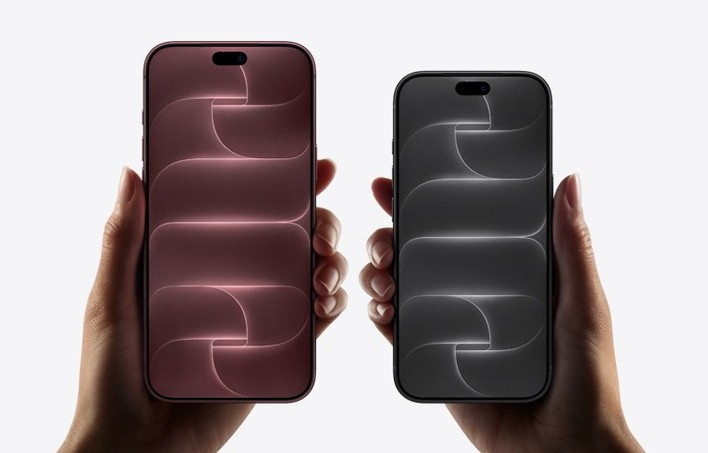

Apple: iPhone Product Design Internship
Shanghai & Shenzhen, China · Mar to Aug 2026
Skills
This summer I did a co-op with Apple’s iPhone Product Design team in Shanghai and Shenzhen. The images here (design challenge) might look like a mechanical design job, but it was a truly unique experience – from making sure intricate subsystems work together in precision manufacturing processes, to AI-driven software projects for process optimization.


What I did & learned
1) Diagnosed issues, traced root causes and validated solutions statistically by working with contract manufacturers (CM), in-region and U.S.-based teams. (Mandarin & English)
At first, it’s daunting to have CM engineers with 5, 10+ years of experience looking to you for directions for a top issue, when you’re an intern two weeks in. I quickly learned to rely on intuition (materials, operator processes, deformation), lots of questions (never too many!) and spent time thoroughly studying past cases for patterns.
Over time, I was able to infer root causes quickly - and importantly, I learned that it matters more to communicate often and deliver a minimum viable solution and leverage CM expertise, than to delay and iterate for the most reliable, full-fledged approach.
2) Prototyped and demo’d a deep learning vision detector for display defects, helping address an issue where human and machine inspections were too inconsistent to validate fixes.
I proactively connected with display team members, learning about how light reflects/refracts in the screen structure to build physics-informed representations to better match human judgments. I then sorted through thousands of images and evaluated training strategies, resulting in a model that demonstrated significant improvements to detection consistency.
In an effort to bring this into the factory, I learned that kickstarting something in a large organization takes connecting with peers, presenting ideas clearly, and patience and repetition until opportunities/resources arise. Through countless pitches, cold emails and cross-functional meetings, I helped start an initiative with vendors and ML teams to bring a similar vision detector system onto the line, near the end of my internship :)
3) Helped develop a multi-agentic platform for on-site engineers to more efficiently analyze data and drive daily decisions.
I coworked with software teams in the U.S. on new LLM tools for faster big data analysis to drive better decisions. While I have experience with ML and coding, I was beyond excited to strengthen skills in cloud-based software architectures and database integrations through API/ MCPs.
Moreso, it was incredibly rewarding to be the ‘translator’: Mediating between hardware teams (focused on what matters NOW on the ground) and software teams (focused on what the system/architecture can support), and balancing needs and requirements to create well-designed workflows that covered the best of both worlds.
all projects